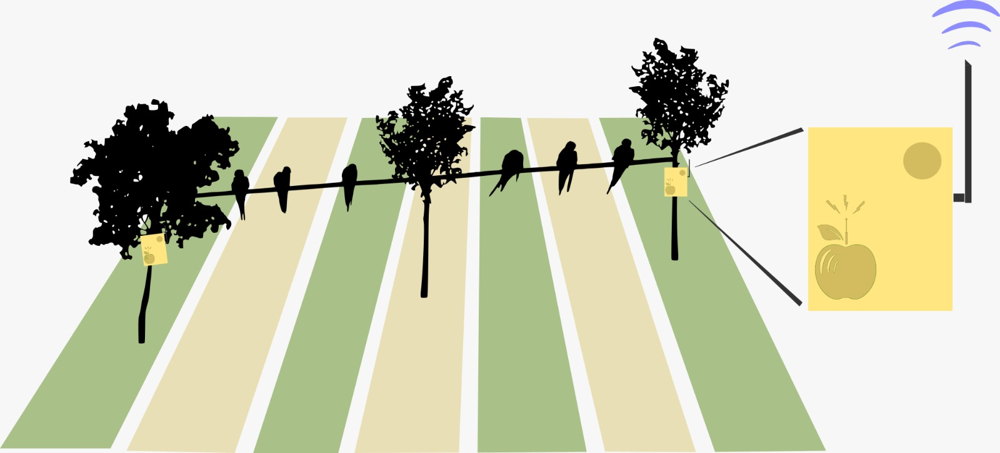

Prototipo de un sistema de detección de aves en cultivos
basado en una red de sensores acústicos
Tutores: Facundo Benavides y Pablo Monzón — Facultad de Ingeniería, Universidad de la República
La cotorra (Myiopsitta monachus) es una especie invasora que causa pérdidas significativas en cultivos frutícolas del Uruguay. El presente proyecto de fin de carrera desarrolla un prototipo de sistema IoT capaz de detectar la presencia de estas aves mediante el análisis acústico del entorno, con el objetivo de habilitar alertas tempranas que permitan implementar medidas de dispersión oportunas.
El sistema está compuesto por nodos sensores basados en el microcontrolador ESP32-S3, equipados con micrófonos MEMS y un modelo de clasificación de audio embebido. Los nodos transmiten eventos de detección a través de una red LoRaWAN hacia un servidor central. El modelo de clasificación fue entrenado sobre un conjunto de grabaciones de campo de Myiopsitta monachus recolectadas en Uruguay.
El sistema se basa en una red de sensores acústicos inalámbricos distribuidos en el campo, que capturan sonidos ambientales. Estas señales son procesadas para detectar la presencia de cotorras y, en caso afirmativo, se genera una alarma con la ubicación estimada del evento de intrusión.

Diagrama conceptual del sistema: nodos sensores distribuidos en el cultivo.
Ejemplos de clips de cotorra recolectados para el entrenamiento del modelo.
Código del firmware: adquisición de audio, filtrado, inferencia del modelo de clasificación y comunicación LoRaWAN.
Grabaciones de campo de Myiopsitta monachus y otras clases de audio, junto con el código de entrenamiento y evaluación del modelo de clasificación.